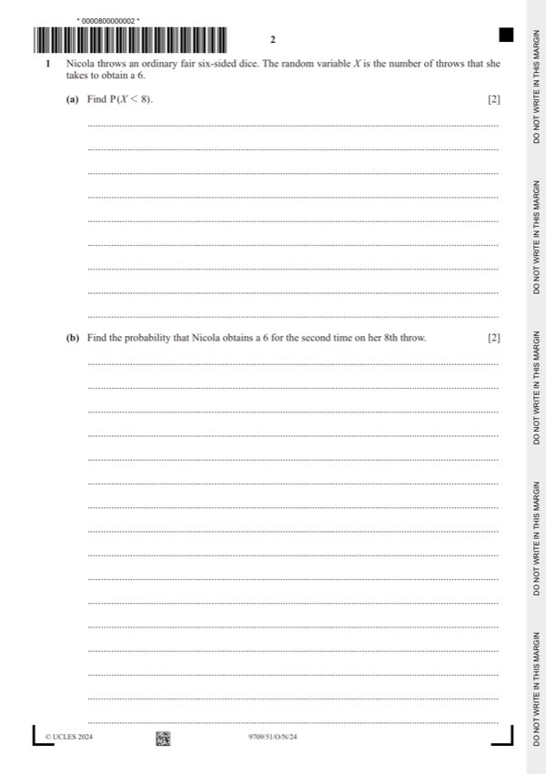

Question 1

Original paper page 2
Part 1(a) — solution
Method 1
Mark points
- Include the ideas shown in the solution above.
Part 1 — solution
- ce – (1 – c) × ce – 1, c = , e = 8,9
Mark points
- ce – (1 – c) × ce – 1, c = , e = 8,9
Part 1 — solution
5 1 5 1 5 1 5 1
+ + + + +
Mark points
- Include the ideas shown in the solution above.
Part 1(b) — solution
- [M1] 6 2
- [A1] 0.0651 ⩽ p < 0.06512
Mark points
- [M1] 6 2
- [A1] 0.0651 ⩽ p < 0.06512
Part 1 — solution
- P(HBB) = = ,
Mark points
- P(HBB) = = ,